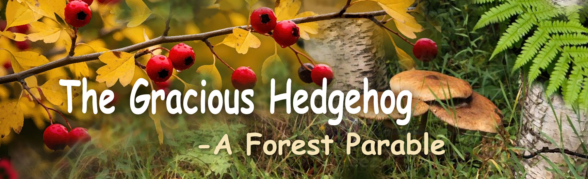

Fairy Tales of Philomur the Cat
faithfully recorded by his devoted admirer — Michel the Rat

The Gracious Hedgehog
(A Forest Parable)
Chapter 1 | Chapter 2 | Chapter 3 | Chapter 4
🍂Chapter 1. Autumn and the Little Mouse
That year, autumn was generous. The forest breathed warmth and sweetness: yellow ripe pears dropped softly into the moss, apples blushed in the sunlight, and under the fallen leaves hid big, juicy mushrooms. The air was thick as honey and smelled of ripeness and peace. Leaves fell to the ground like letters no one would ever read. The moss was damp, but still warm. The wind — not cold, but thoughtful.
Under the roots of an old pear tree, in a cosy burrow, lived a hedgehog named Tichon. He lived alone. His life was quiet — not easy, but not hard either. Tichon knew the forest could be harsh, yet he never resented it. He had simply learned to live within it.
He had his burrow — his home, his world, a place where there was nothing to fear. The burrow was well built: the entrance was narrow so that neither wind nor a curious eye could enter. Inside it was dry and soft, lined with moss and leaves. In the back of the burrow lay his little storeroom. There hung bunches of dried mushrooms, and neatly stacked nuts, roots, and berries. On a separate shelf lay, side by side on dry moss, shining apples and wild pears.
Tichon was a careful housekeeper. Every day he went into the forest, walked along familiar paths, gathering mushrooms, acorns, and fruit. He would carry them home, neatly skewered on his spines — convenient, like a little cart — and, grunting softly, make his way back to the burrow. He knew the forest not by stories, but by traces, smells, and sounds.
He knew it could be many things:
— gentle in summer,
— generous in autumn,
— full of hope in spring,
— and hungry and cold in winter.
The forest was both kind and cruel, full of danger, hunters, and traps. That is why Tichon was cautious. He trusted no one — not because he was unkind, but because he knew the price of trust. He never asked for help — not out of pride, but because he knew the cost of dependence. He did not fear — not because he was brave, but because fear was a luxury he could not afford.
He was wise. Sometimes, while working, Tichon liked to talk to himself: “While autumn is still warm,” he muttered, “I must hurry. Soon the snow will fall — no more fruit, no more mushrooms. In winter everything will be covered. Those who have no stores will perish.”
He stopped, caught his breath, adjusted an apple that had slipped from his spines. “When you live alone — rely on yourself,” he murmured. “There’s no one to ask… and no need. Everyone has their own worries. Work and live. Fear won’t help you, pity won’t feed you.” So thinking, Tichon reached an old raspberry bush.
Suddenly — he heard a squeak. Thin, sharp, and plaintive. He pricked up his ears. Someone was moving under the leaves. Tichon carefully pushed the grass aside and saw a little mouse — small, grey, with shiny eyes and a broken paw. It was breathing fast, squeaking softly, looking around as if hoping someone would hear.
Tichon knew: for any hedgehog, a mouse is a delicacy. The world is harsh and unfair, and everyone survives as best they can — why not eat it? But Tichon wasn’t hungry. And, more than that, he didn’t want to cause pain. He stood still, looking at the tiny trembling body, then sighed. The little mouse stared back at him, frightened. And Tichon felt pity.
“Ah, little one…” he said quietly. “The world is cruel, but not everyone has to be. Don’t be afraid — I’ll help you.” He gently lifted the mouse with his paw, pressed him to his chest, and carried him into the burrow. Inside, he laid him on soft moss, gave him a drop of water, a slice of sweet apple, and bound the paw with a thin blade of grass.
Tichon simply did what he felt was right. He knew: kindness is neither protection nor reward, and not everyone will value it. But if you can be kind — be kind. Not for someone else. For yourself. Evening came.
The sun sank, the cool air crept through the forest, and the wind rustled in the leaves. And in the warm burrow under the roots of the old pear tree, the air smelled of apples and herbs. Two small creatures slept side by side, curled up in a ball.
Top of the page🐭 Chapter 2. The Ungrateful Little Mouse
Life in Tichon’s burrow was easy and peaceful for Shurik. Warm moss, sweet berries, nuts and roots — everything a small creature could wish for to forget fear and pain. His paw had healed, and soon he was running and jumping again, full of energy and curiosity.
Tichon cared for him. He never asked questions, never lectured, never expected gratitude — he simply shared what he had. He gave, and he was glad when Shurik ate with appetite. For Tichon, kindness was as natural as breathing. But Shurik did not understand.
Sometimes, when he looked at Tichon, he felt uneasy. His little mind could not grasp a simple thought: why would anyone do good if they get neither reward nor praise in return? Sometimes Shurik thought: “Maybe Tichon is old and weak and afraid of me. Or maybe he’s just foolish. Or perhaps he wants to look righteous, so that everyone admires him. Or… maybe he’s feeding me to eat me later?” Such thoughts buzzed inside his head and gave him no peace.
Tichon was calm, gentle, silent — and to a frightened heart, calmness can seem dangerous.
One day, Shurik decided it was time to leave. The quiet and warmth of Tichon’s burrow had grown dull. He longed for adventure, for freedom, for something new. He told himself he owed no one anything — he was clever, independent, and free. But food, of course, was necessary, for the forest was cold, and hunger is always stronger than conscience.
When Tichon was away, Shurik found a little bag and began choosing the best fruits — the ripest, the sweetest, the shiniest. He nibbled at each pear, apple and nut, tasting, deciding what to keep. The tastiest went into his bag; the rest he tossed aside carelessly. He wasn’t in a hurry — Tichon always returned late, and his burrow was never locked. When the bag was full to the brim, Shurik slung it over his shoulder and left — without looking back.
He didn’t thank Tichon, didn’t say goodbye. He thought, “Why should I? I don’t need him anymore. I’ll never see him again.” Later that day, when Tichon returned, he saw that the mouse was gone. That did not sadden him — he knew Shurik was young and restless, longing for freedom. But when he looked into his pantry, he froze. Half-eaten apples, gnawed pears, cracked nuts — all scattered across the floor, mixed with moss and dirt. Everything he had gathered so carefully for the long winter was ruined.
Tichon sat silently by the entrance, looking at the remains of his work. He knew he couldn’t save what was spoiled. Winter was already near. He rose, brushed off the straw, covered the doorway with leaves and went back into the forest, hoping to find something more. But the forest had changed. Each day the snow lay thicker, the ground grew harder, and there were no more berries, mushrooms or acorns to be found.
Tichon understood — a long, cold winter awaited him. Yet he did not grow angry. Not at Shurik, not at himself. He only sighed and thought quietly: “He’s still small. Foolish. He didn’t understand what he’d done. Getting angry would only spoil my mood. What’s the use?”
He did not regret saving him.
He did not wait for gratitude.
He simply said to himself:
“I did what I believed was right.
The rest — will be as it must be.”
❄️ Chapter 3. An Unexpected Find
Winter was harsh. Snow lay thick and heavy, like a white blanket of silence. The wind didn’t sing — it moaned and howled, like a hungry wolf wandering among the sleeping trees. Thin and weary, Tichon walked through the forest, shivering with cold. He peered into hollows and crevices, searching for something to eat. His stores were long gone.
Tichon ate little, moved slowly, and the slower he moved, the colder he grew. All day long he found perhaps a few frozen berries or a couple of old nuts. The wind tore the last dry leaves from the trees, and the blizzard hid even the smallest traces of life under snow. No mushrooms, no acorns, no insects — only the white stillness of a frozen forest, and the creaking sound of his own steps.
It was the hardest winter of Tichon’s life. He remembered the warmth of autumn: the bright apples in his pantry, the scent of dry grass, the comfort of his burrow. But memories could not fill an empty stomach. Cold and exhausted, he turned homeward, when suddenly, in the snow before him, he noticed something small and grey. At first, he thought it was a pinecone — a lucky find, perhaps a meal. But as he leaned closer, he froze. It was alive. A tiny, wounded, trembling creature. And as he brushed the snow away, Tichon gasped. It was Shurik.
The little mouse lay motionless, his fur torn, his body marked by the claws of a bird. He no longer squeaked or cried for help — he was too weak to make a sound. He was freezing, dying slowly, and utterly alone. Tichon stood for a long time, looking at him. He remembered the gnawed pears, the rotten apples, the hunger and hardship that had come long before winter.
He could have turned away. He could have said, “You chose this yourself.” No one would have blamed him. But Tichon felt no anger. Only pity — quiet, warm, steady, like a small flame in the snow. He understood: if he left Shurik there, the little mouse would not live until morning.
Shurik opened his eyes slightly. His gaze was dull, clouded like ice. He saw Tichon — and did not fear him. He could not speak, only cried silently, and his tears froze on his cheeks like tiny crystals. Tichon bent down, lifted him gently, pressed him to his chest to warm him, and carried him back to his burrow.
All night he did not sleep. He warmed Shurik with his breath, bandaged his wounds, gave him water and the last crumbs of food, and quietly hummed an old lullaby — not for Shurik, but for the silence itself.
Days passed — long, anxious, heavy. Gradually, Shurik began to recover. He could crawl, then walk again, and his fur grew soft and shiny once more. But Tichon grew weaker. Nights of hunger and sleepless cold had taken their toll. By the end of winter, he fell ill with a heavy cough and could barely rise from his bed of moss.
Yet even then, half-asleep and feverish, he sometimes smiled — because he could still hear another heartbeat beside his own. And that meant: he had done the right thing.
Top of the pageChapter 4. 🐁The Nut of Kindness🦔
Tichon knew — his strength was fading. He did not complain, nor call for help. Who was there to call? He had lived his life quietly and honestly, and now he accepted everything as it was.
By that time, Shurik was completely well. He was fast again — lively and playful. He scurried about the burrow, tossing nut shells, peeking into every corner, squeaking, running, laughing — barely noticing Tichon lying on his mossy bed.
Tichon watched him with a gentle smile. He knew — Shurik would soon leave. As soon as the sunlight began to sparkle on the melting ice, the mouse would feel the pull of freedom and run toward life again.
He did not feel anger or sadness. He understood: this is the way of things — the young must move forward. He had grown fond of Shurik, and even his restless energy no longer bothered him. On the contrary — it warmed the burrow, a reminder that life still stirred nearby.
And one morning, Tichon awoke — to silence. The burrow was empty. Shurik was gone. Again. Without a word. Tichon did not sigh with grief — only with peace. “He’s alive,” he thought. “That’s what matters.” Yet the silence felt heavier now, colder. He closed his eyes and listened to the breathing of the earth.
Meanwhile, Shurik ran along a thawing path. The sun sparkled on the snow, icicles glistened like crystal strings, and the whole forest shimmered with sound and light. Shurik rejoiced in the spring. But one thought, sharp and stubborn as a thorn in his fur, would not leave him alone. He kept seeing Tichon — old, sick, still and silent. The one who had saved him twice. He tried to argue with himself: “He’s old. He wouldn’t have survived anyway. I’m free, I owe him nothing. He chose to help me — that was his decision. And I choose life. Freedom. My own path.” But the words gave him no peace.
He had wandered around, without meaning, by chance, he ended up in exactly the same place where he once lay dying in the snow. The place where his life had nearly ended. And there, on a patch of thawed ground, lay a great cedar cone — heavy, full of sweet nuts, as if spring itself had placed it there.
Shurik pushed the cone. It rolled heavily. He kept pushing, slowly, stubbornly, panting with effort. His fur stuck together with sweat, his paws trembled — but he did not stop. At last — the burrow. The familiar entrance beneath the old pear tree. The cone barely fit inside.
Shurik took out a few nuts, crushed them the way hedgehog used to, brewed a cup of fragrant tea from dried herbs and the last drops of honey that clung to the bottom of the empty jar, and set it quietly beside the mossy bed.
Tichon slowly opened his eyes. Their gazes met.
No words.
Tichon understood. Tears — not of pain, but of joy — filled his eyes. He raised his paw weakly, and Shurik pressed close to him. The burrow smelled of pine nuts and spring. Outside, the meltwater whispered among the roots. Life was returning to the forest.
Tichon closed his eyes.
He knew — all was well.
He had lived his life with purpose.
The seeds of kindness had taken root.
And one day, a great and mighty tree of generosity and compassion would rise — in his beloved forest.
❤️ The end ❤️
Top of the page
🌟 Вопросы и задания для юного читателя
1. О чём эта глава? Перескажи историю в 3–5 предложениях.
2. Кто главный герой этой главы? Опиши его: внешность, характер и настроение.
3. Если бы ты мог задать главному герою один вопрос, каким бы он был? Запиши его — и попробуй ответить на него от имени героя.
4. Какой выбор сделал кто-то в этой главе? Согласен ли ты с ним? Что бы ты сделал иначе?
5. Найди в главе 5–10 новых слов. Запиши их, узнай их значение и составь по одному предложению с каждым словом.
6. Выбери свою любимую фразу или момент. Почему он тебе запомнился?
7. Придумай короткую дополнительную сцену, которая могла бы произойти дальше. Напиши 3–6 реплик диалога.
8. Придумай новое название для этой главы. Объясни, почему ты его выбрал.
9. Какие чувства вызвала у тебя эта глава? Выбери три слова (например: любопытство, тревога, радость, удивление) и объясни свой выбор.
10. Выбери сцену, которая запомнилась тебе больше всего. Нарисуй её и добавь маленькие детали, которые считаешь важными.